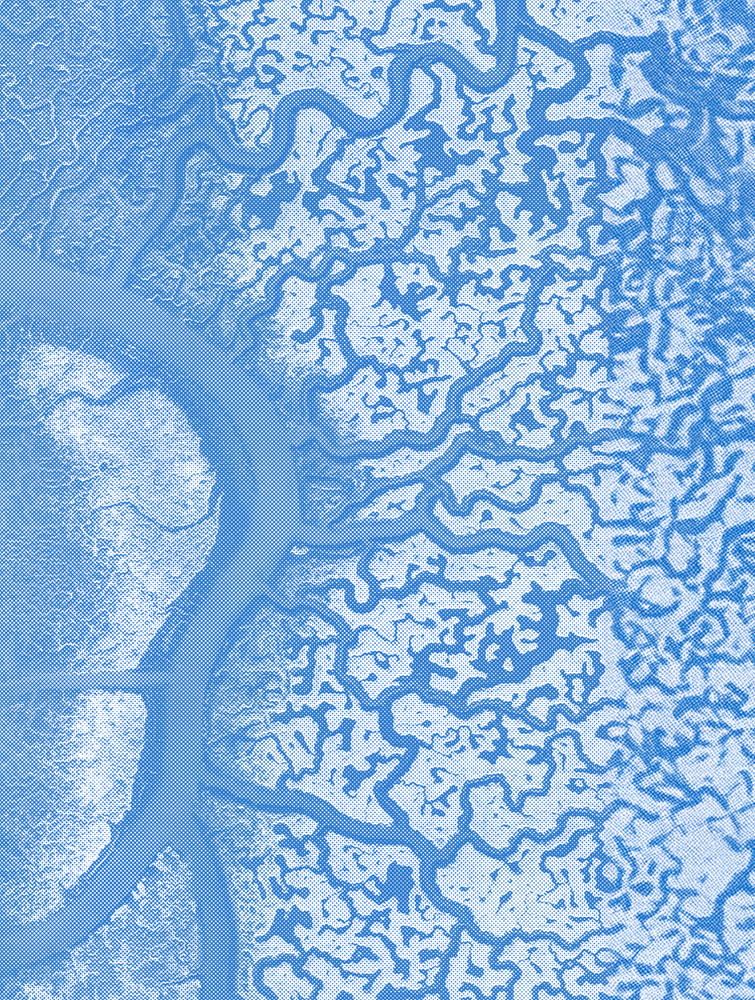
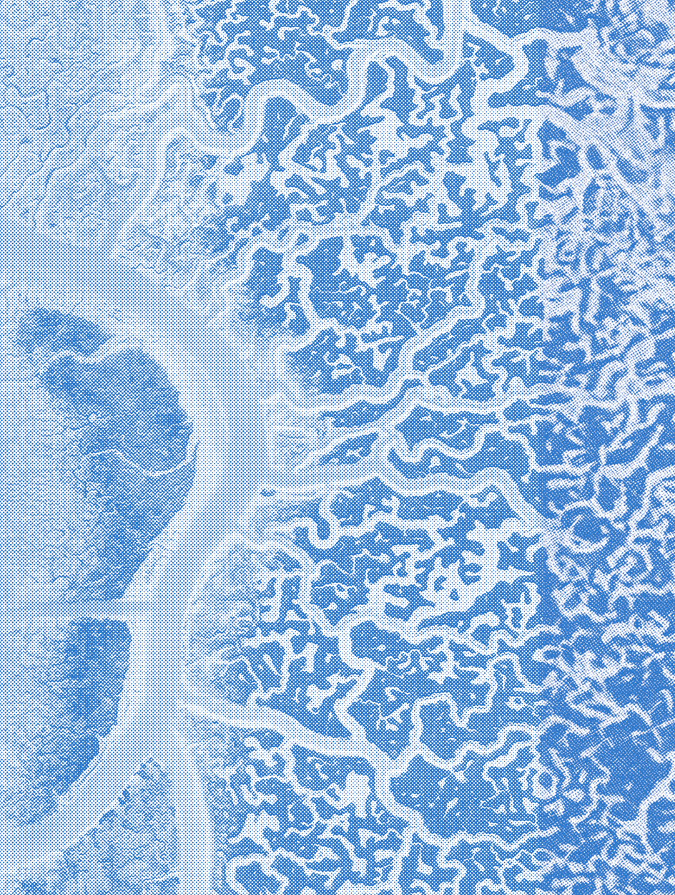
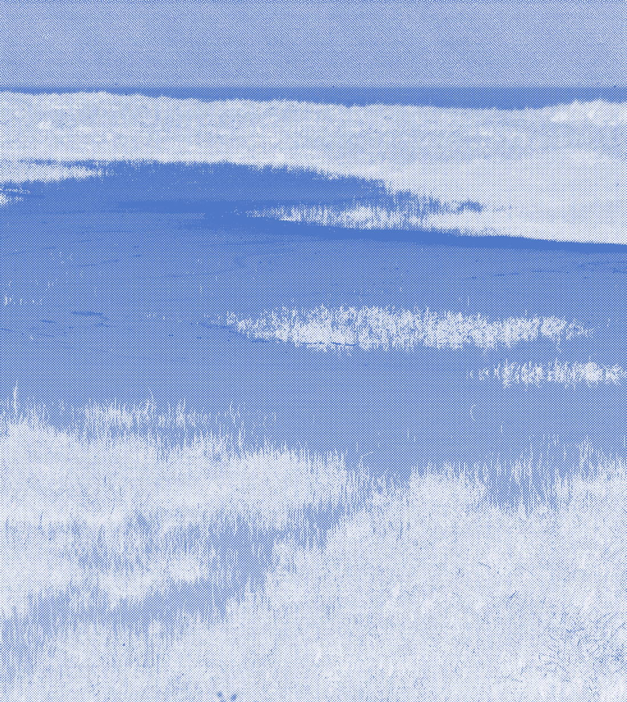
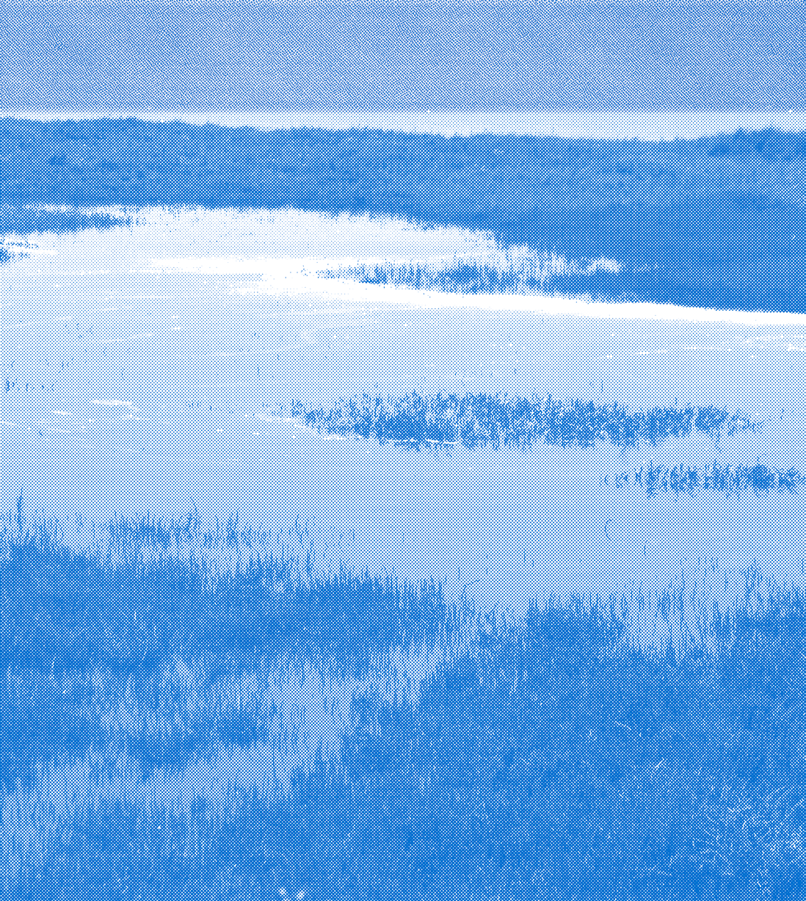
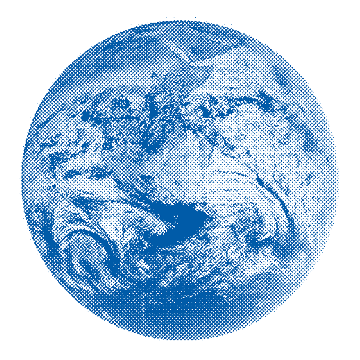

Blue Days


Del al en el Palacio de Congresos de Cádiz.
Estas jornadas reúnen a expertos, empresas, investigadores y ciudadanos para explorar el potencial de la economía azul como motor de desarrollo sostenible. A través de ponencias, talleres, actividades y mesas redondas, abordaremos temas clave como la innovación marina, la biodiversidad costera, las energías renovables del mar y las oportunidades de empleo azul. Blue Days es una cita imprescindible para aquellos que creen en construir un futuro más justo y resiliente desde el mar.


